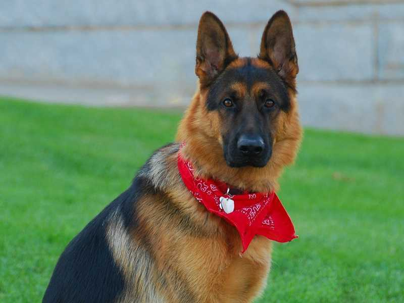

strona główna | zwierzęta | kontakt
Strona główna
tutaj dowiesz się o rasach i zachowań poszczególnych psów
Miłego czytania...
Owczarek niemiecki 
Owczarek niemiecki jest typem sportowca i niełatwo dotrzymać mu kroku. Poradzi sobie niemal w każdej dziedzinie pracy i sportu, jego właściciel powinien więc być energiczny i chętny do
współdziałania. Pies tej rasy jest oddany właścicielowi i lojalny wobec wszystkich członków rodziny.
Dalmatyńczyk

Dalmatyńczyk (wyżeł dalmatyński , chorw. dalmatinac) – jedna z ras psów, należąca do grupy psów gończych, posokowców i ras pokrewnych, zaklasyfikowana wraz z rodezjanem do sekcji ras pokrewnych. Zgodnie z klasyfikacją amerykańską należy do grupy psów użytkowych .